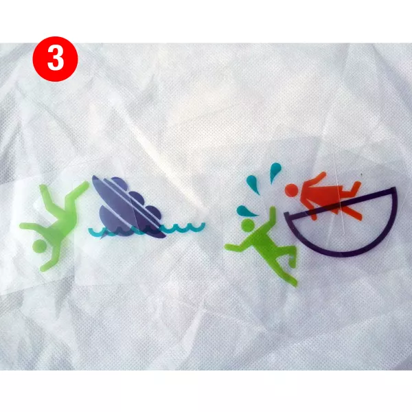
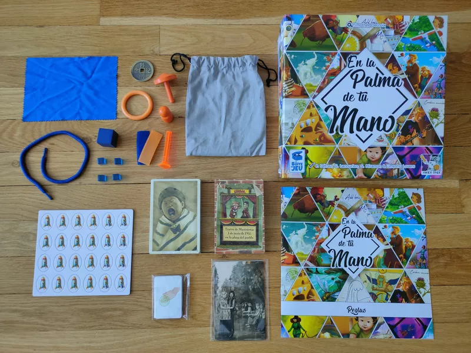
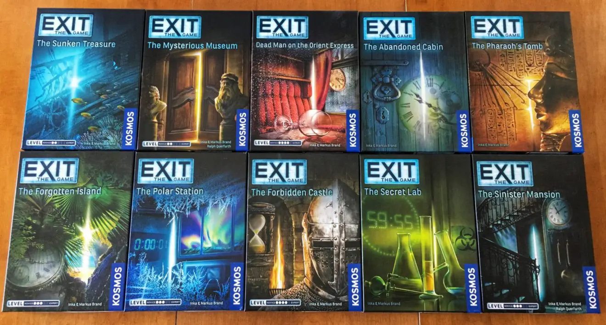
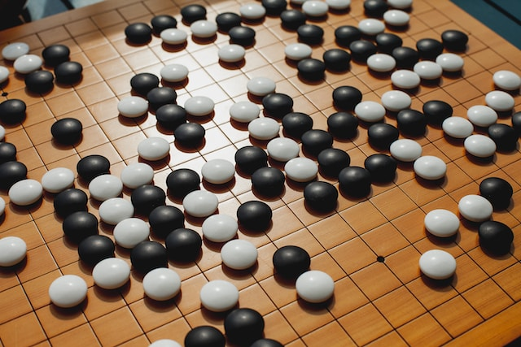

"It's a game of thinking just like everybody else! All players are asked the same question,
then write down their responses at the same time. Answer with the majority, join the GREEN TEAM
and get points. Don't: join the ORANGE TEAM and get nothing.. 1) Get on the GREEN TEAM. 2) Stay
on the GREEN TEAM. 3) WIN." -From the publisher 3-12 players | Ages 10+ | 15 mins
Imagine (AKA Pictell)
"More than one thousand items from all walks of life can be guessed through the use of 61
transparent cards in Imagine, whether they're placed next to one another or superimposed. Almost
everything in the world can be represented by a simplified concept — just don't speak while
you're playing..." -BoardGameGeek 3-8 players | Ages 12+ | 15-30 mins
In the Palm of Your Hand
Players in teams of two use any of the 11 included 3D objects to "act out" a scene depicted on a
card. One player acts out the scene, haptically, in the palm of their teammate's hand while their
partner has their eyes closed! That player must then choose the correct scene from among other
red herring cards. 2-8 players | Ages 10+ | 20-30 mins
Exit: The Game (Series)
"In Exit: The Game, players must use their team spirit, creativity, and powers of deduction to
crack codes, solve puzzles, collect objects, and earn their freedom bit by bit." -BoardGameGeek 1-6 players | Ages 12+ | 45-150 minsJust One
"Just One is a cooperative party game in which you play together to discover as many mystery words
as possible. Find the best clue to help your teammate. Be unique, as all identical clues will be
cancelled!" -BoardGameGeek 3-7 players | Ages 8+ | 20-30 mins
Go (AKA Igo/Baduk/Weiqi)
"By all appearances, it's just two players taking turns laying stones on a 19×19 (or smaller) grid
of intersections. But once its basic rules are understood, Go shows its staggering depth. One can
see why many people say it's one of the most elegant brain-burning abstract games in history, with
players trying to claim territory by walling off sections of the board and surrounding each other's
stones. ... Whoever controls the most territory wins." -BoardGameGeek 2 players | Ages 8+ | 20-180 mins